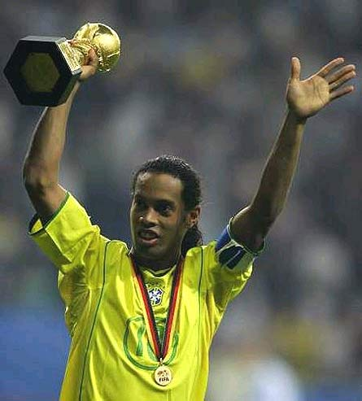

Formación
Ronaldinho comenzó su carrera en el Grêmio de Porto Alegre en 1998. A los 20 años, se trasladó al Paris Saint-Germain y luego al Barcelona en 2003, donde alcanzó la cima de su carrera.
Conocido por su técnica y creatividad, ganó la Copa Mundial de Fútbol con Brasil en 2002. Se retiró en 2018 tras una ilustre trayectoria.
Premios y Reconocimientos

Ronaldinho, conocido por su magia en el campo, ha recibido numerosos premios y reconocimientos a lo largo de su carrera. Aquí hay un resumen de sus logros más destacados:
- - Balón de Oro: 2005.
- - FIFA World Player: 2004, 2005.
- - UEFA Best Forward: 2005.
- - UEFA Club Footballer of the Year: 2005.
- - Onze de Oro: 2004, 2005.
- - FIFA FIFPro World XI: 2004, 2005, 2006.
- - Campeón del Mundo con Brasil: 2002.
- - Campeón de la Copa América con Brasil: 1999.
- - Campeón de la Liga de Campeones con FC Barcelona: 2005-06.
- - Campeón de la Serie A con AC Milan: 2010-11.
- - Campeón de la Copa Libertadores con Atlético Mineiro: 2013.
- - Campeón de la Recopa Sudamericana con Atlético Mineiro: 2014.